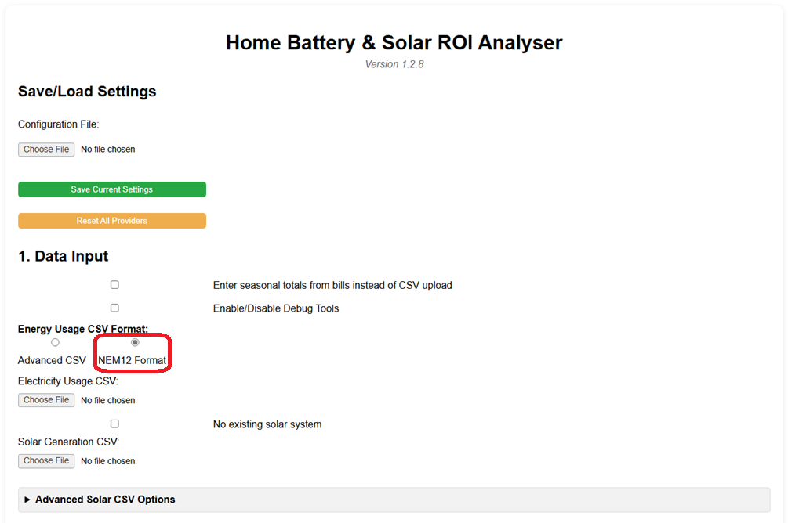
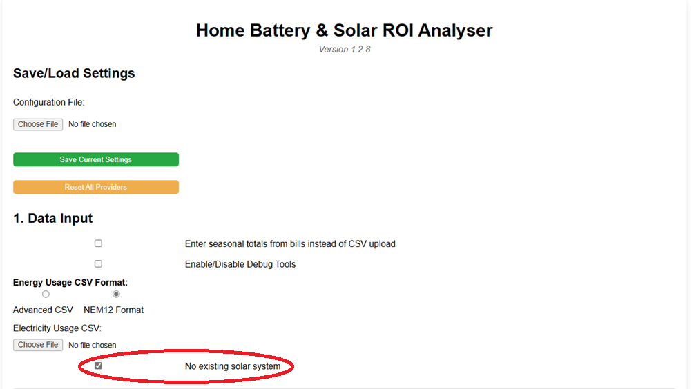
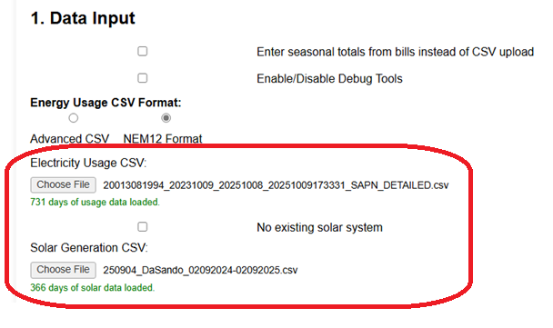
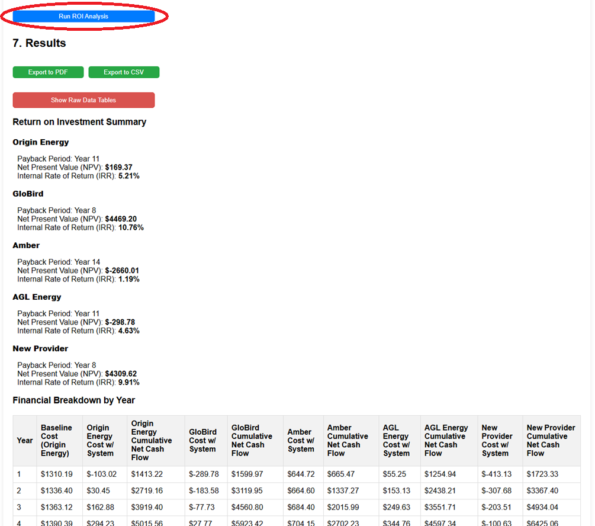

This guide explains how to import your energy usage data using the "NEM12 Format" option. NEM12 is a standardised file format used in Australia for interval meter data, often obtainable from your energy retailer or distributor. Using this format simplifies the import process as no advanced configuration is needed.
In Section 1: Data Input, select the radio button labelled "NEM12 Format".

Selecting this mode will automatically hide the "Advanced Usage CSV Options" section, as it is not required for the standard NEM12 format.
The NEM12 option requires at least one file:
No Existing Solar? If you do not currently have a solar system, check the "No existing solar system" box. This will hide the need for a separate Solar Generation CSV file.

No advanced configuration is needed for NEM12.
Choose File button under "Electricity Usage CSV" and select your NEM12 file. The analyser will parse grid import (E1), grid export (B1), and controlled load (C1/C2) data automatically.Choose File button under "Solar Generation CSV" and select that file. (Ensure its format matches the defaults in "Advanced Solar CSV Options", if they don't match then edit the options or save/load a config file where you've previously set them).Wait for the green status messages below each button confirming the number of days loaded (e.g., "365 days of usage data loaded."). If you see errors, ensure the file selected is a valid NEM12 format CSV.

With your data successfully loaded via NEM12, you now need to configure the rest of the analyser. Click on the Sections below for details:
(Click the links above for detailed guides on each section.)
Once all sections are configured, scroll down and click the Run ROI Analysis button in Section 7.
The results based on your imported NEM12 data will appear below the button.
